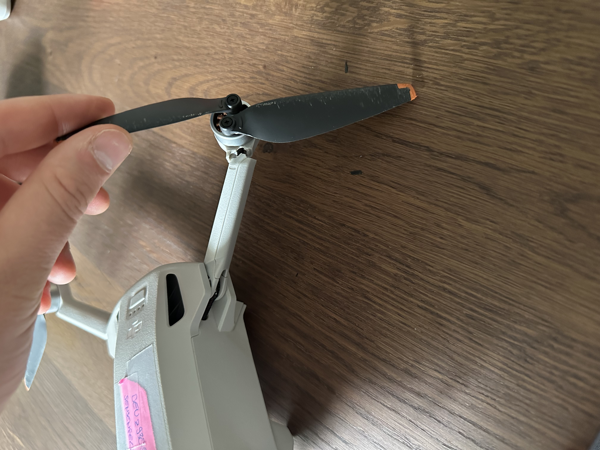

Drohnen sind super, außer wenn sie abstürzen
gebrochener Arm

Reparatur: gebrochener Arm - erfolgreich!
Video vom Startflug nach Absturz mit gebrochenem Arm
Dein Browser unterstützt das Video-Tag nicht.
Testflug erfolgreich; Präsentation einiger Bilder
Fallback: Sollte das lokale Video nicht laden, kannst du es hier über YouTube ansehen.
3D Viewer
Wenn man die Luftbilder verarbeitet, lassen sich 3D Modelle erstellen. Diese kann man dann im Web präsentieren, wie hier in dem iFrame.